Introduction to openFrameworks
Introduction to openFrameworks
Introduction to openFrameworks
Introduction to openFrameworks
Introduction to openFrameworks
Set Up:
- You should have Xcode or Visual Studio 2015 installed
- Also, you should have downloaded oF for your system
- I like to keep the oF folder in Documents
Slides are here: https://mhellar.github.io/ofworkshop/1
Grab the code here: http://bit.ly/2c5wYej
Unzip the code and place it inside the apps folder of your openFrameworks folder
- Introductions
- What is openFrameworks
- Installing and running your first example
- File and Code structure of a project
- Drawing in 2D
- Rendering text
- Programming: Variables, Functions, Classes and Vectors
- Working with Images and Videos
Topics for Today
openFrameworks is an open source C++ toolkit used for creative coding. It was created by Zach Lieberman in 2005. Today oF is one of the primary creative coding platforms. It is actively maintained by Zach Leiberman, Theodore Watson, Arturo Castro and the openFrameworks community
openFrameworks is indebted to to some significant precursors, mainly the Processing programming environment. Lets have a brief history lesson.
Design by Numbers 1999
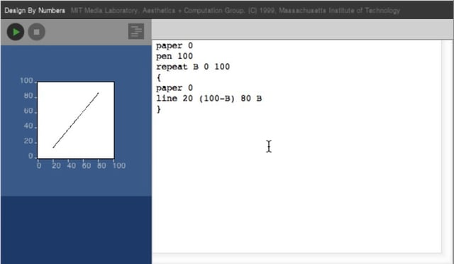John Maeda
Processing 2001 - Present
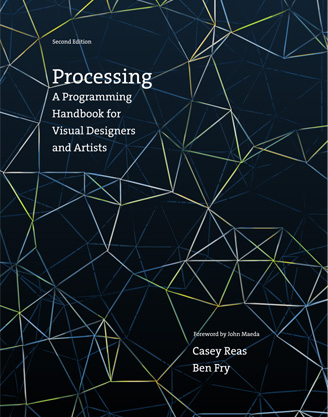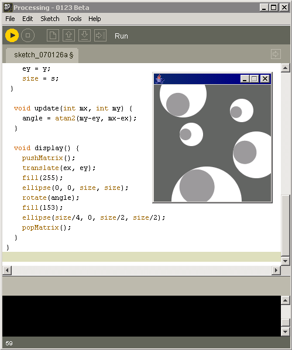Casey Reas and Ben Fry
Casey Reas, Articulate(2003) 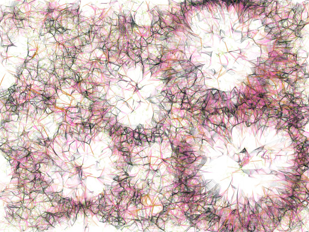
Arduino 2005 - Present
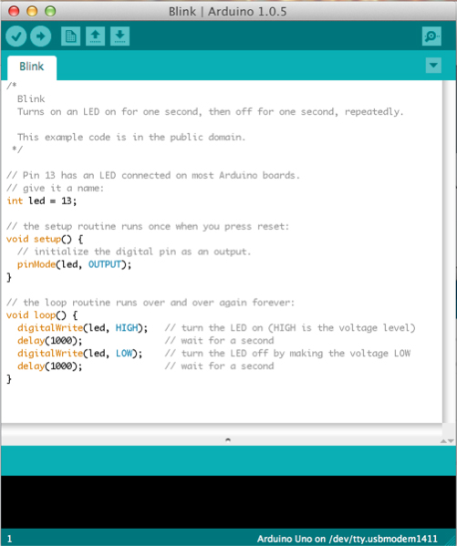 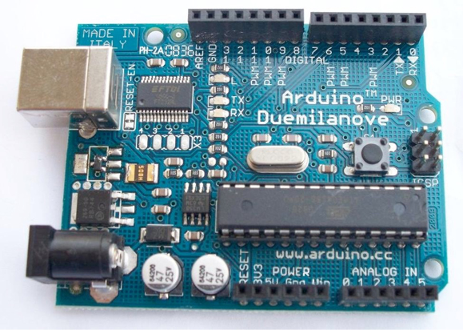Markus Kayser: Solar-sintered Bowl. 2011
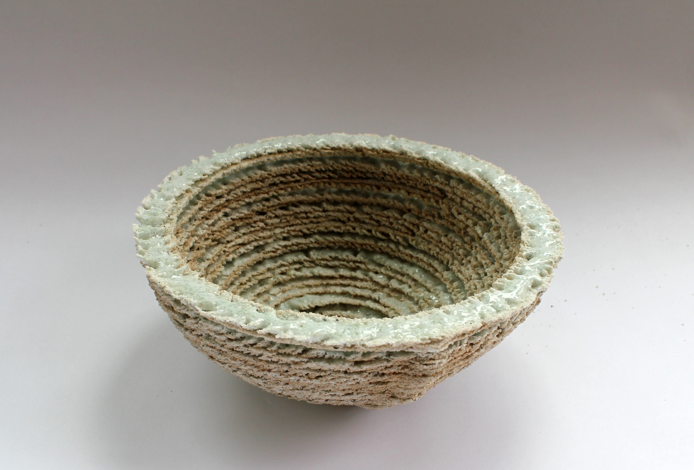
“The two most important introductions for art in the past 20 years have been the Arduino and Processing,”
- Paola Antonelli, senior curator in the Department of Architecture and Design at the Museum of Modern Art.
Open Frameworks 2005 - Present
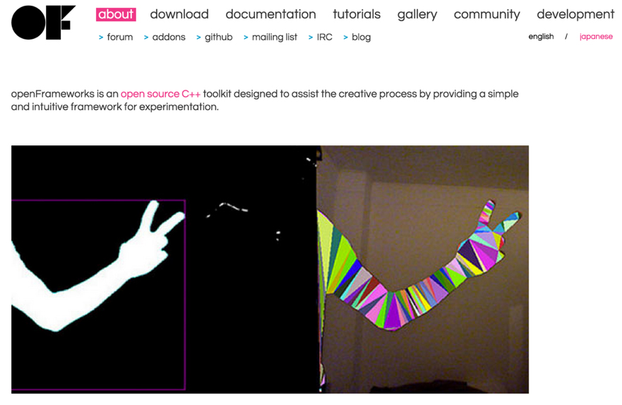Zachary Lieberman
Rafael Lozano-Hemmer - Level of Confidence(2015)
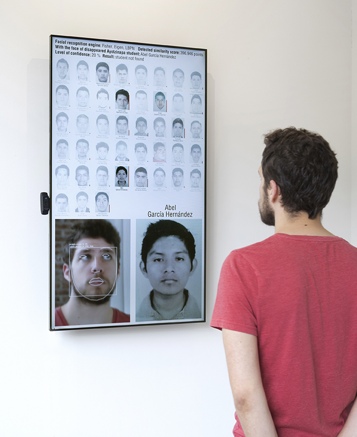p5.js
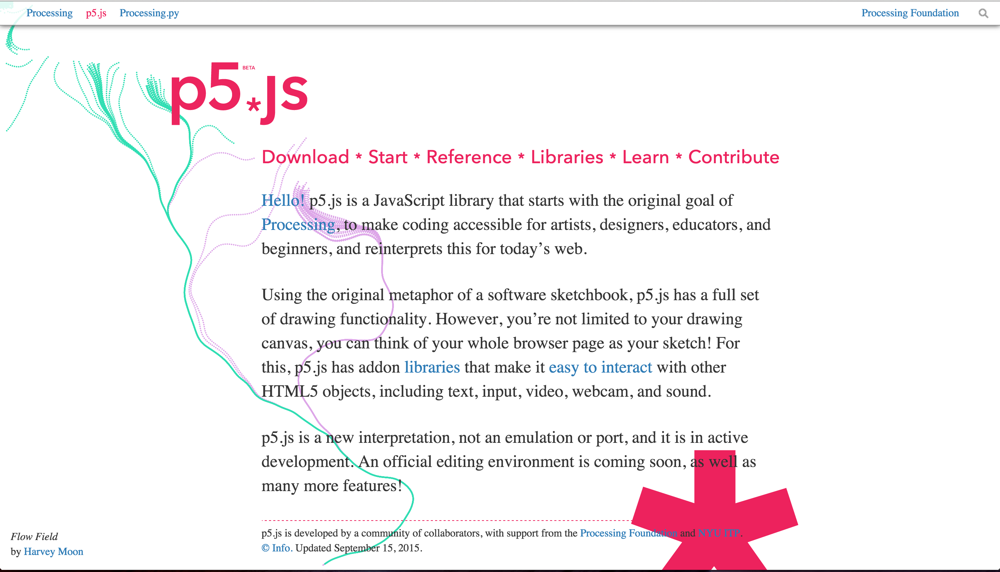 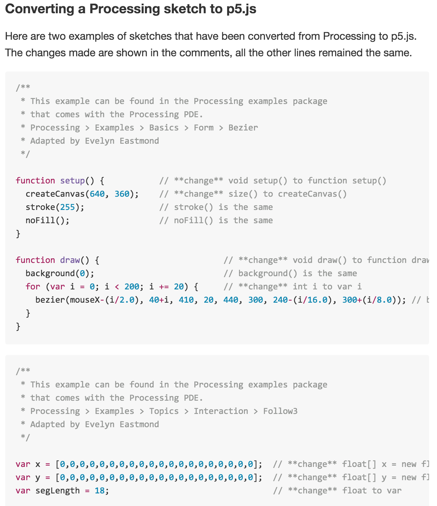Lauren McCarthy
Cinder
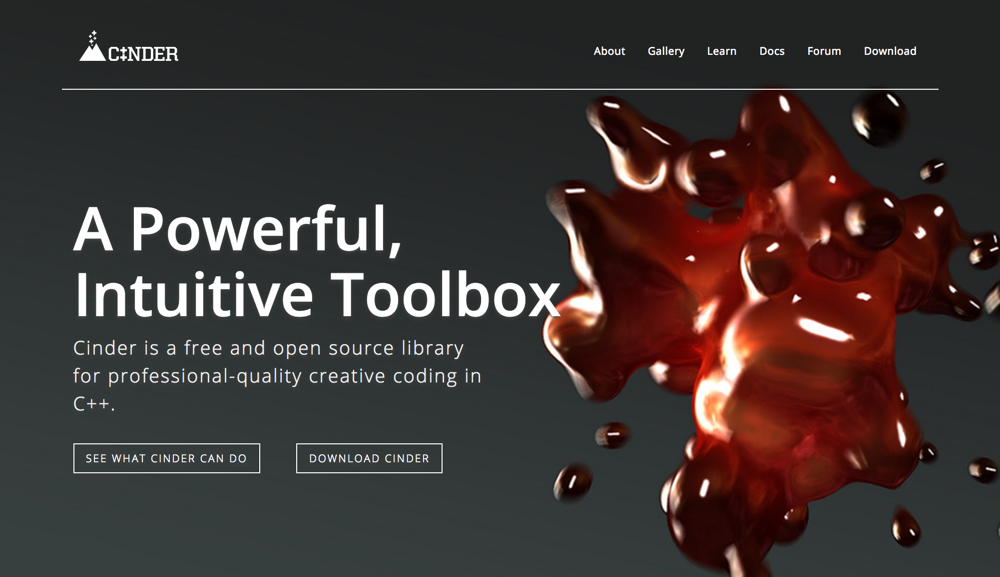Clouds Documentary
Openframeworks compiles for the following platforms:
- OSX(Darwin)
- Windows
- Linux
- IOS
- Android
- Linux on ARM(i.e. Raspberry Pi)
Use Cases(suggested)
- oF's core libraries deal with Multimedia, 2D and 3D graphics, images, video and sound. oF is good for developing new media projects for onsite installations and also rich multimedia desktop or mobile apps
- It works with the C++ language which is compiled to native machine code for the target platform, whch results in very performant fast applications that maximize the latest harware.
- It is not Web first (it is possible to transpile to asm.js Emscripten but this is very new and not eveything works)
- Great for interaction prototyping!
"Please Empty Your Pockets" (2010) by Rafael Lozano-Hemmer from bitforms gallery on Vimeo.

Running your first example(OSX)
On OSX go to oFroot/examples/3d/3DPrimitivesExample and double click 3DPrimitivesExample.xcodeproj
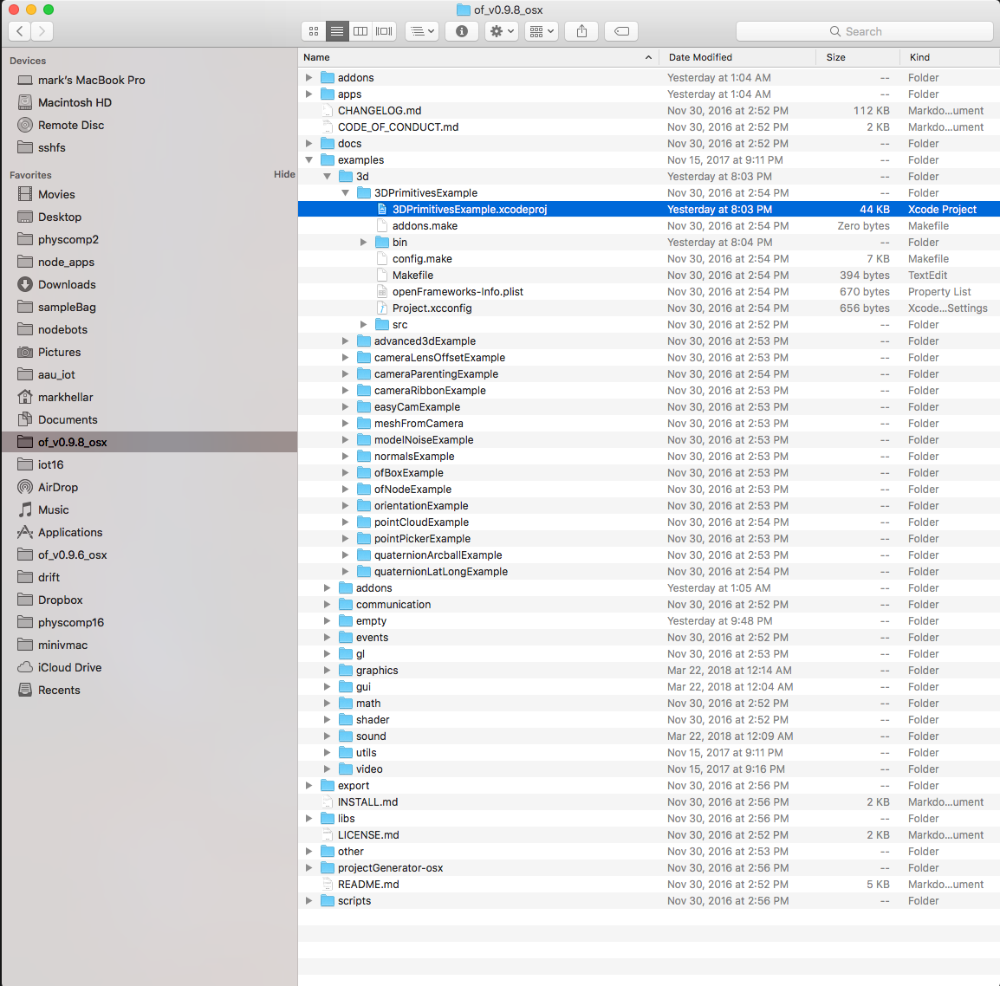1. Set the dropdown to 3DPrimitivesExample Debug 64-bit 2. Hit the play button
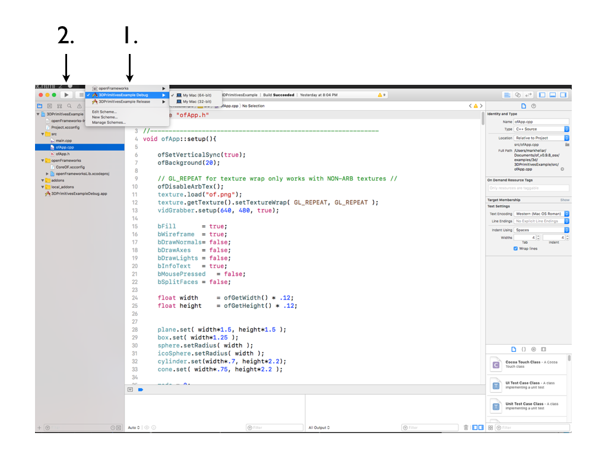(it will likely compile all of oF the first time, future builds will be much shorter)
Final Result
Running youe first example(Win)
On Windows go to oFroot/examples/3d/3DPrimitivesExample and double click 3DPrimitivesExample.xcodeproj
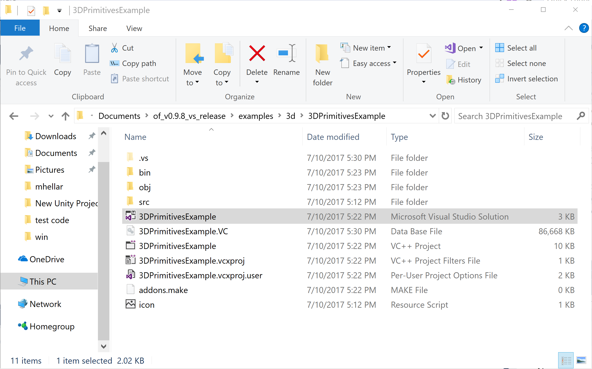1. Set the dropdowns to Debug 64-bit & x64. 2. Hit the play button 3.Click yes
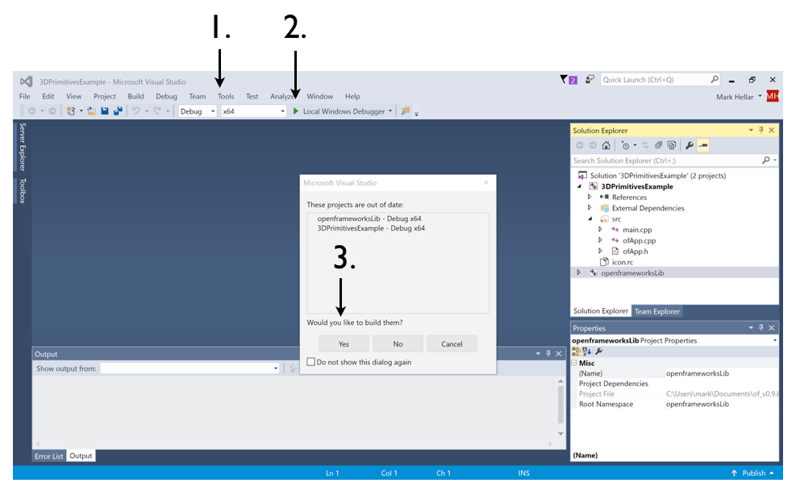(it will likely compile all of oF the first time, future builds will be much shorter)
Final Result
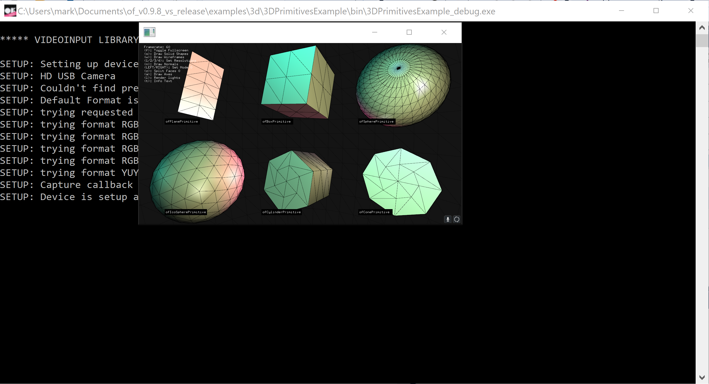Note there are two build configurations, "Debug" and "Release".
Debug is useful when developing your project, as it will provide the most information about where and why something crashed.
Release is useful when you're done developing your project. Release will create a smaller, faster app -- but it won't give you much information if it crashes.
You will find a standalone executable in the 3DPrimitivesExample/bin folder
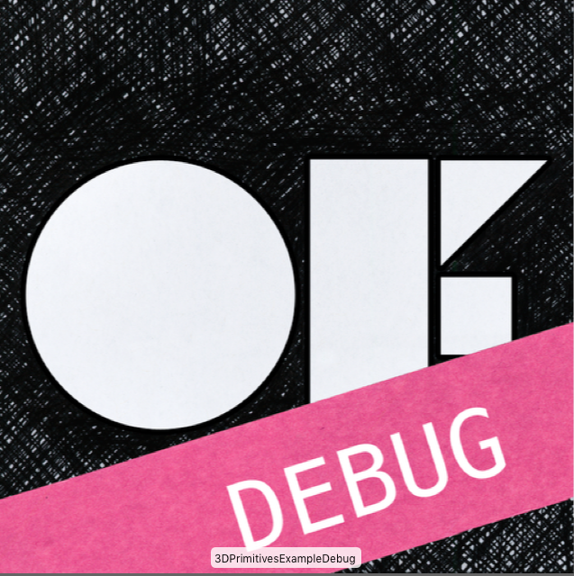Great! everyone is up and running
Now, Lets have a look at some of the important folders in the oF folder:
- Examples
- Apps
- Addons
Examples
- 3D: Examples for 3D graphics and 3D math
- addons: Examples of various addons, extensions of oF core API i.e. Kinect, OpenCV, OSC
- communication: Examples for communication with hardware vi Serial port. i.e. talk to an Arduino
- empty: contains emptyExample. Copy this and use as a starting template
- events: Examples for dealing with events such as keypress, custom events and timers
- GL: Advanced Examples for 2D and 3D graphics, FBOs, Shaders etc..
Examples(Cont)
- graphics: Examples of 2d graphics
- gui: Examples using the built in GUI
- math: math examples including a simple particle system, vector math and noise
- sounds: Examples for playing, recording and basic generation of sounds
- util: Examples useful topic such as working with directories, saving and loading files, threads etc..
- video: Examples for playing, recording and processing video. Also how to use the webcam
Apps
- This is where all of your apps will live
- You must place your programs in a subfolder of apps
- right now there a is a subfolder called myApps, we can put new projects in there
- you can make your own folders here to organize your programs i.e. 2018drawings
- if you do not place you program in a subfolder of apps it will not compile
- we will make a new app in the next excercise
Addons
- This is where the addons live
- Addons extends the core API of oF
- an example might be and addon for using the Kinect or using the Twitter API
- We will look at addons in depth on Thurs
Docs
- Docs
- This contains some documentation the the markdown format
- It's mainly platform specific, i.e. IOS, Android
- For the core API documentation look here: http://openframeworks.cc/documentation
File structure of a Project
Lets look at the file strucure of oFworkshop/emptyExample
This is a bare minimum project
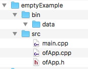The bin folder is where our executable or binary file will live once we compile the program
The bin/data folder is where we can include assets for our program such as fonts, images, sounds, movies etc...
The src folder is where our code lives
At minimum there should be main.cpp , ofApp.cpp and ofApp.h
we will walk through each of these files in just a bit
The Project Generator
- In addition to the files oF needs we need a few more files specific to our compiler platform
- Xcode calls them projects
- Visual Studio calls them solutions
- oF comes with a tool called the project generator that helps with that
- It's easy, lets use it!
The Project Generator(OSX)
In the oF folder double click projectGenerator-osx/projectGenerator
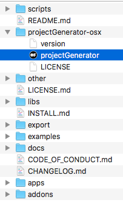The Project Generator(OSX)
The first time you run it, it will ask for the oF path
for example mine is: /Users/markhellar/Documents/of_v0.9.8_osx
Once it's setup, hit import
import the emptyExample folder from apps/oFworkshop
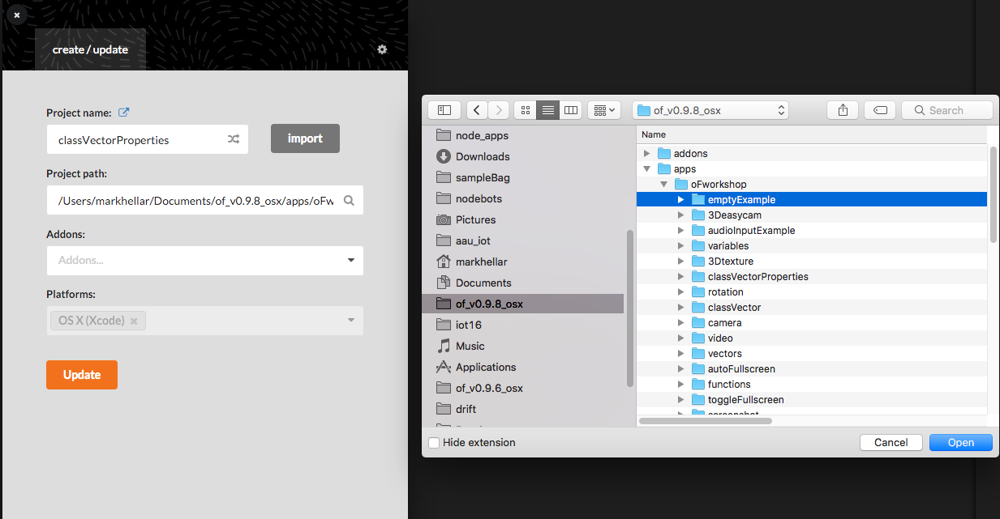Now hit update
and them open in IDE
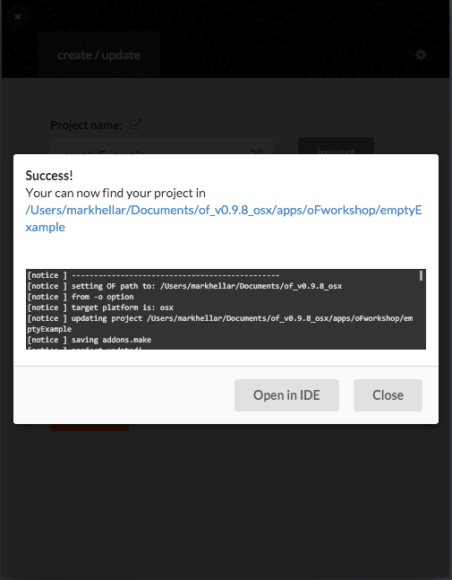This will open the project in Xcode
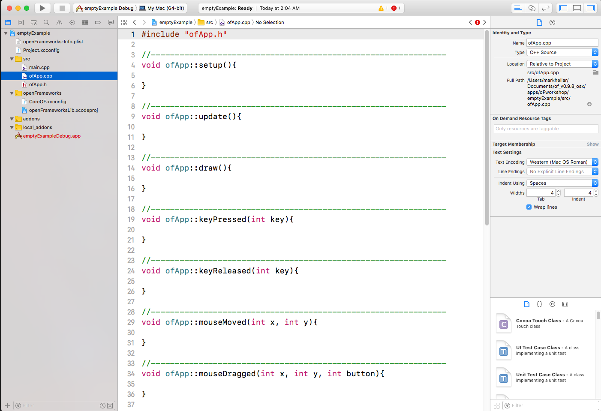The Project Generator(Win)
In the oF folder double click projectGenerator-vs/projectGenerator
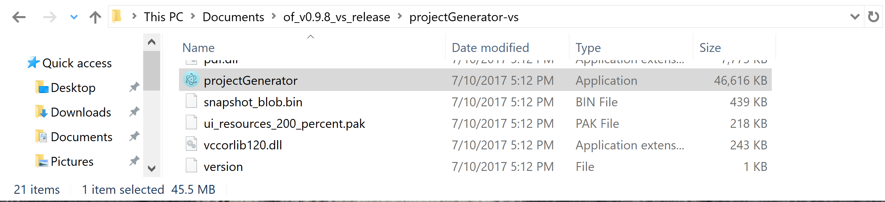Once it's setup, hit import
import the emptyExample folder from apps/oFworkshop
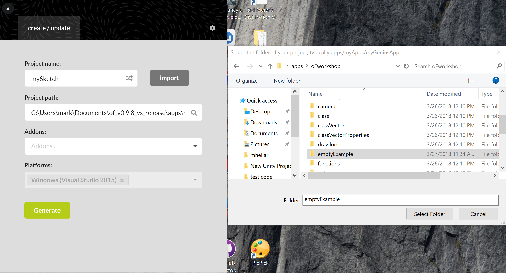Now hit update
and then open in IDE
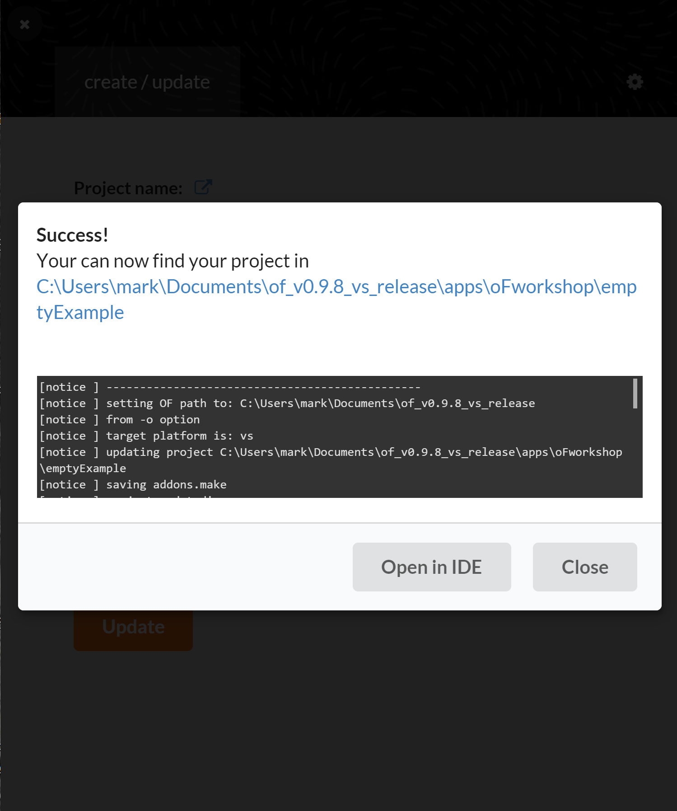This will open thje project in Visual Studio
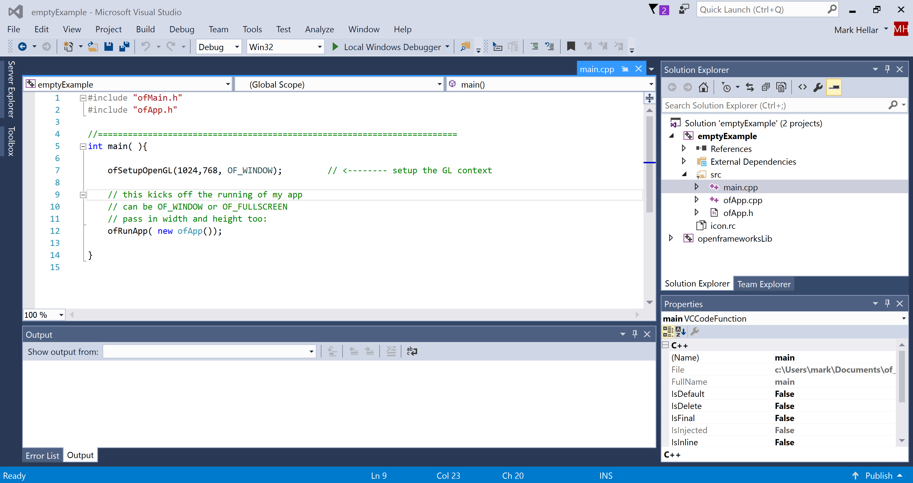Main.cpp
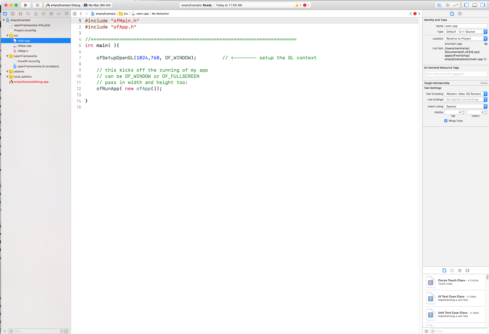main.cpp
- In C++ each project must have a .cpp file with a main() function defined
- There's not too much to change here, except:
- ofSetupOpenGL(1024,768, OF_WINDOW);
- We can change OF_WINDOW to OF_FULLSCREEN to fullscreen the application
- We can change the size by altering 1024,768
ofApp.h
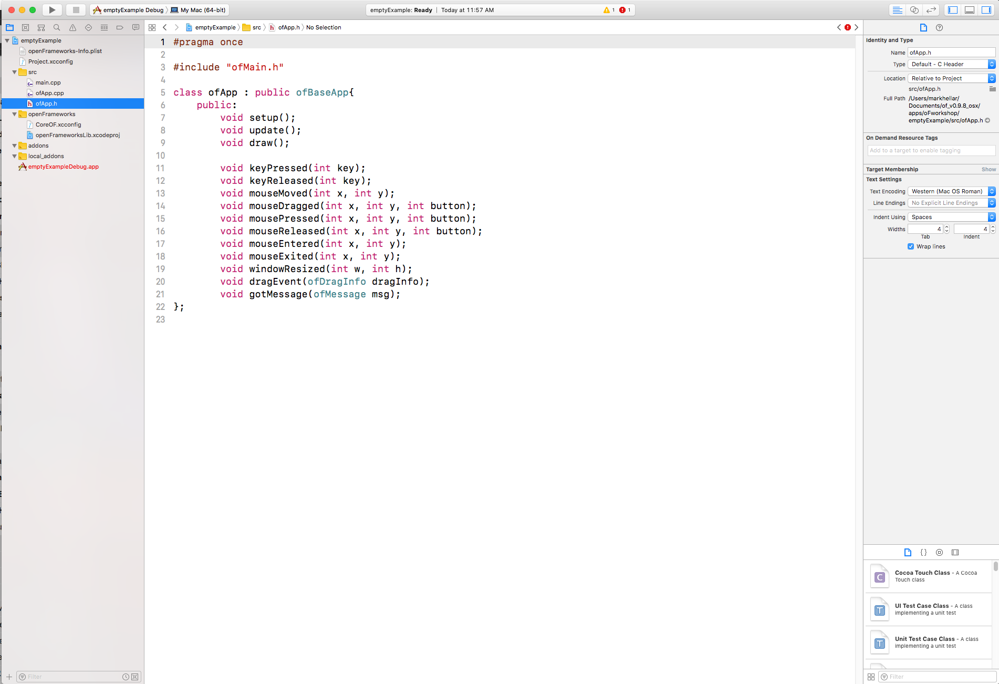ofApp.h
- In the header file we define the structure of our program
- #pragma once is a compiler directive, include this in all header files
- #include "ofMain.h" imports all of the core classes from oF
- once oF is imported we have ofBaseApp available
- We are defining something called a class named ofApp for our program based on ofBaseApp
- This is called inheritance
- Inside our new ofApp class we have also inherited some functions..
ofApp.h(cont)
- The most important functions are setup(), update() and draw()
- These functions are the bare minimun required
- Some other functions such as mouseMoved(int x, int y) are provided, which we may not use
- In the header file we simply declare the name of classes function and variables for our program
- We write the code for these in ofApp.cpp
ofApp.cpp
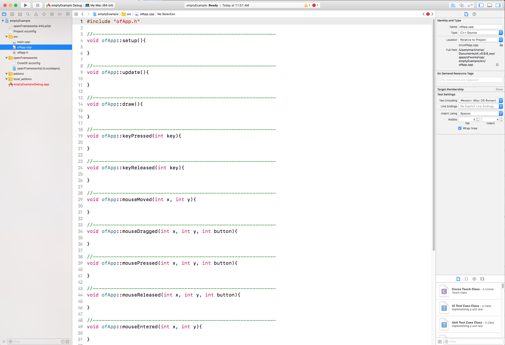ofApp.cpp
- The ofApp.cpp file contains the definitions of all functions declared in ofApp.h
- Lets go through the primary functions
- setup() is called first and runs only once
- update() is called every frame before draw()
- draw() is called every frame all drawing functions should be called here
- by default the program runs at 60FPS
setup()
- Some examples of things we may put here:
- ofSetFrameRate(30); //reduce the framerate to 30FPS
- ofSetFullscreen(1); //set fullscreen to true
- Things you only need to do once
update()
- Some examples of things we may put here:
- Update a variable before redering it to the screen in draw()
- read data from the network
- Things you need to happen before drawing the results to the screen
draw()
- Some examples of things we may put here:
- ofDrawCircle(200,400,80); // draw a shape
- ofDrawBitmapString("hello", 300, 300); //draw some text
ofApp.h and ofApp.cpp compared
ofApp.h and ofApp.cpp compared
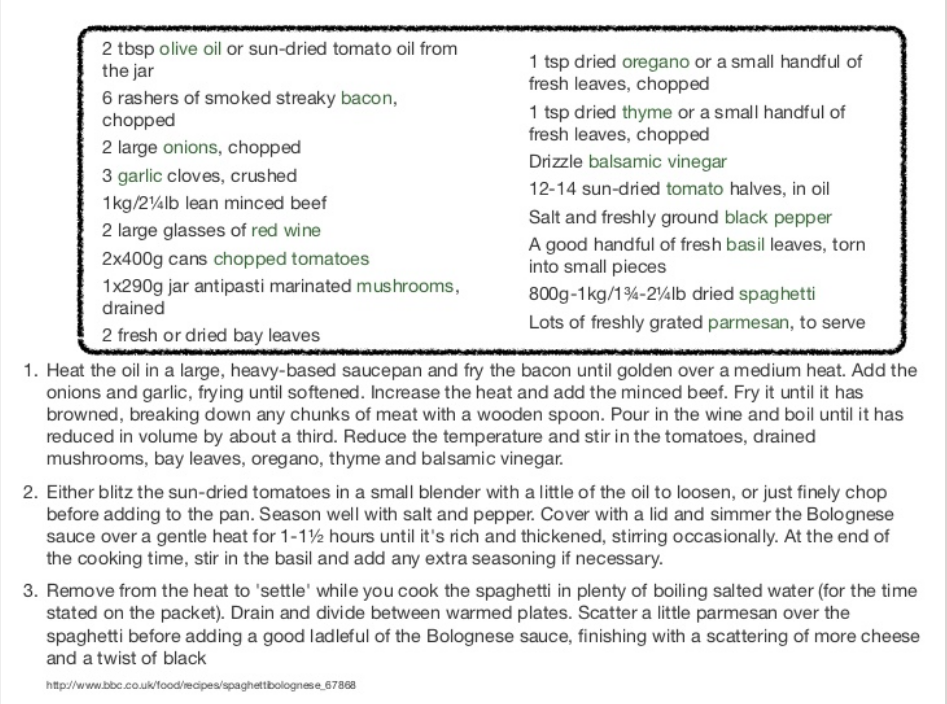ofApp.h and ofApp.cpp compared
ofApp.h and ofApp.cpp compared
Open basicshapes
and lets walk through the code
Open basicshapes2
and lets walk through the code
Open text
and lets walk through the code
Open loadFont
and lets walk through the code
font file is located in bin/data
Excercise 1
- open mouseXY
- Pair up
- Use this as a helper template
- Draw a picture using elements from the last 4 examples
- Hit space to take a screenshot
Open variables1
Open variables2
Open paintbrush
Open rotation
Open loops
Open Functions
Classes
- A recurring analogy is to see a "class" as a cookie cutter that can create many cookies, the "objects"
- Some terms:
- A class defines the characteristics of a thing - the object - and its behaviours; it defines not only its properties and methods
- An object is an instance of a class.
- The methods are the objects abilities.
Open Class
Open ClassVector
Open ClassVectorProperties
Excercise 2
- open yourClass
- Pair up
- Use this as a helper template
- Modify the class using elements from the previous examples
Images
open ImageLoading
open imageSpiral
Video
open video
open dataFromVideo
open Camera